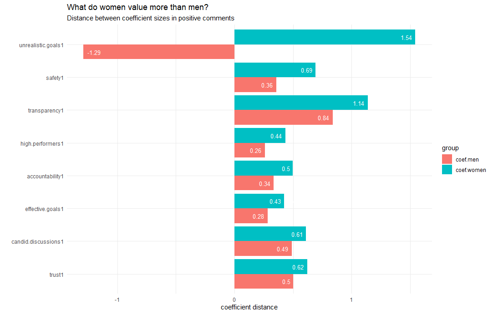

Workplace Culture
This project is an ongoing collaboration with a Colgate University professor focusing on modeling workplace culture. We are using a high-dimensional dataset consisting of workplace ratings along with demographic information and over one hundred text based factors to determine what aspects of a business make up its' "culture". This is done through exploratory analysis of the data, as well as interpreting coefficients and marginal model effects.
My role in this collaboration has been to determine how different subsets of people might judge culture differently. Specifically, I am analyzing the differences in values between men and women, frontline and managerial employees, and older versus younger employees. I approach this question marginally by subsetting the data and fitting seperate models, then exploring the differences between coefficient magnitude and other variable importance metrics between the groups in question. While this project is still in early stages, this technique has been highly effective and revealed plenty of intriguing insights.
